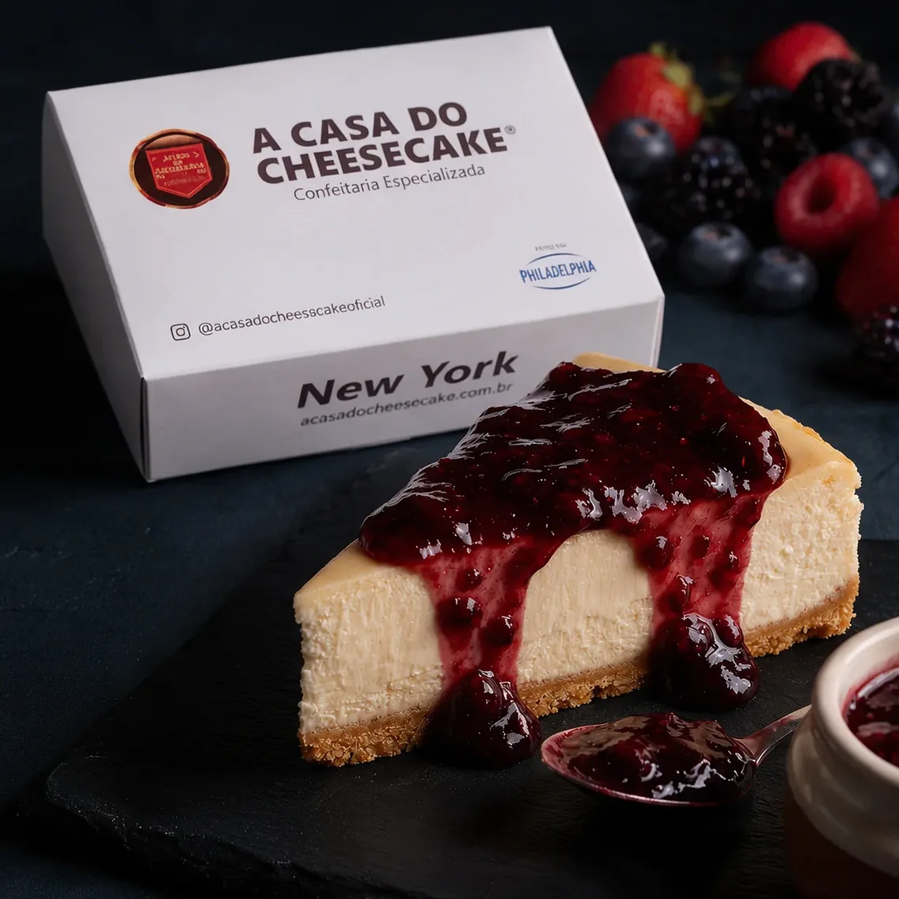
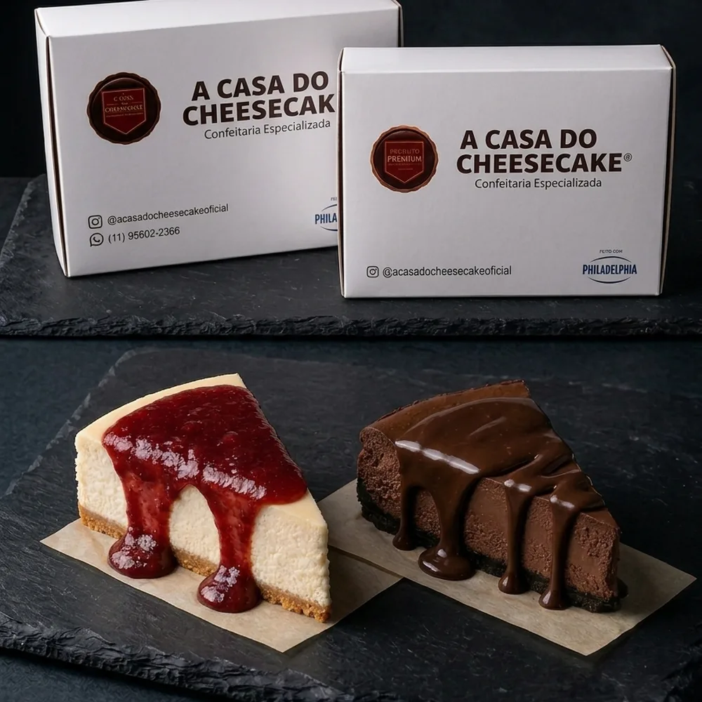
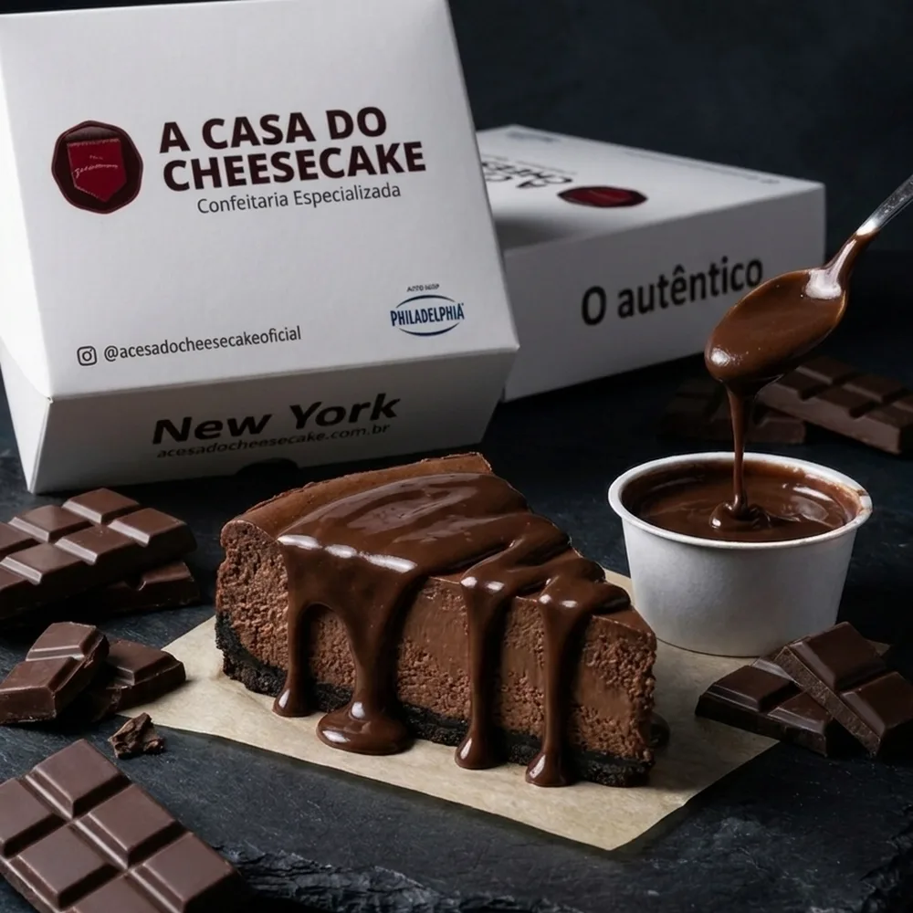
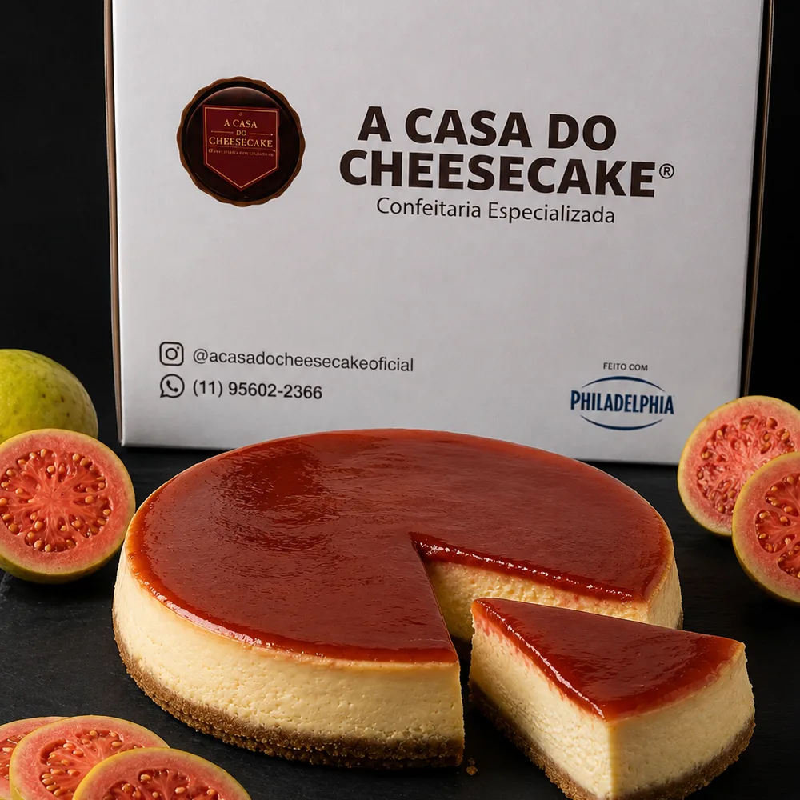
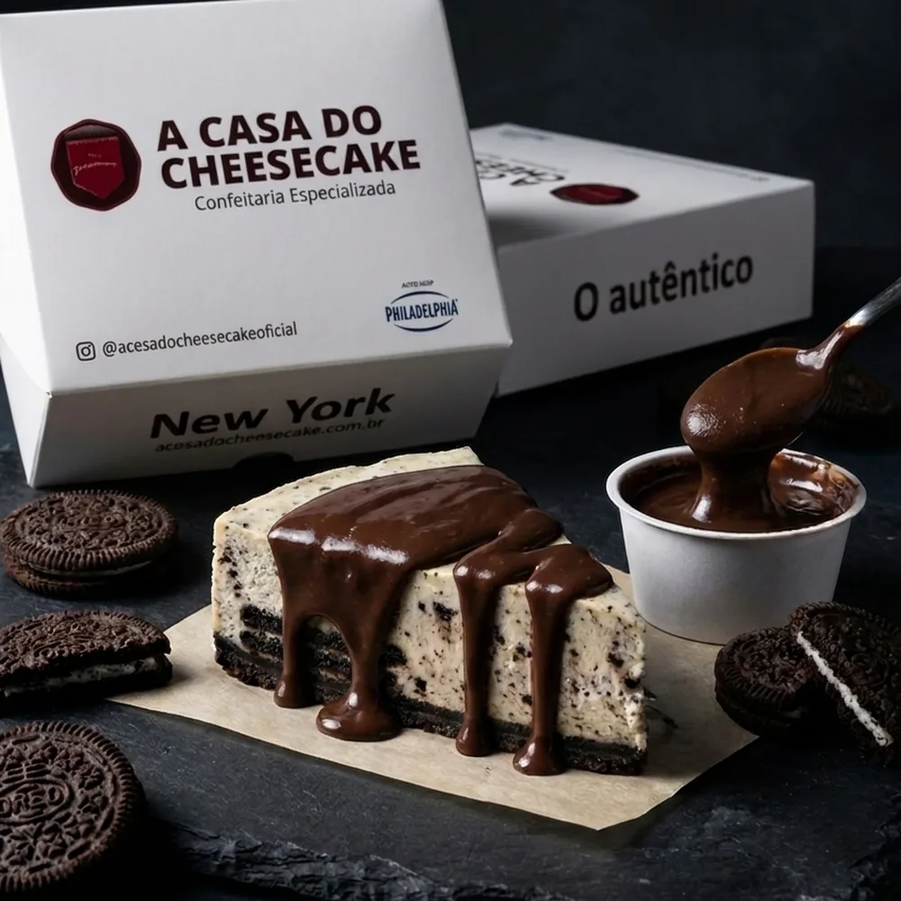
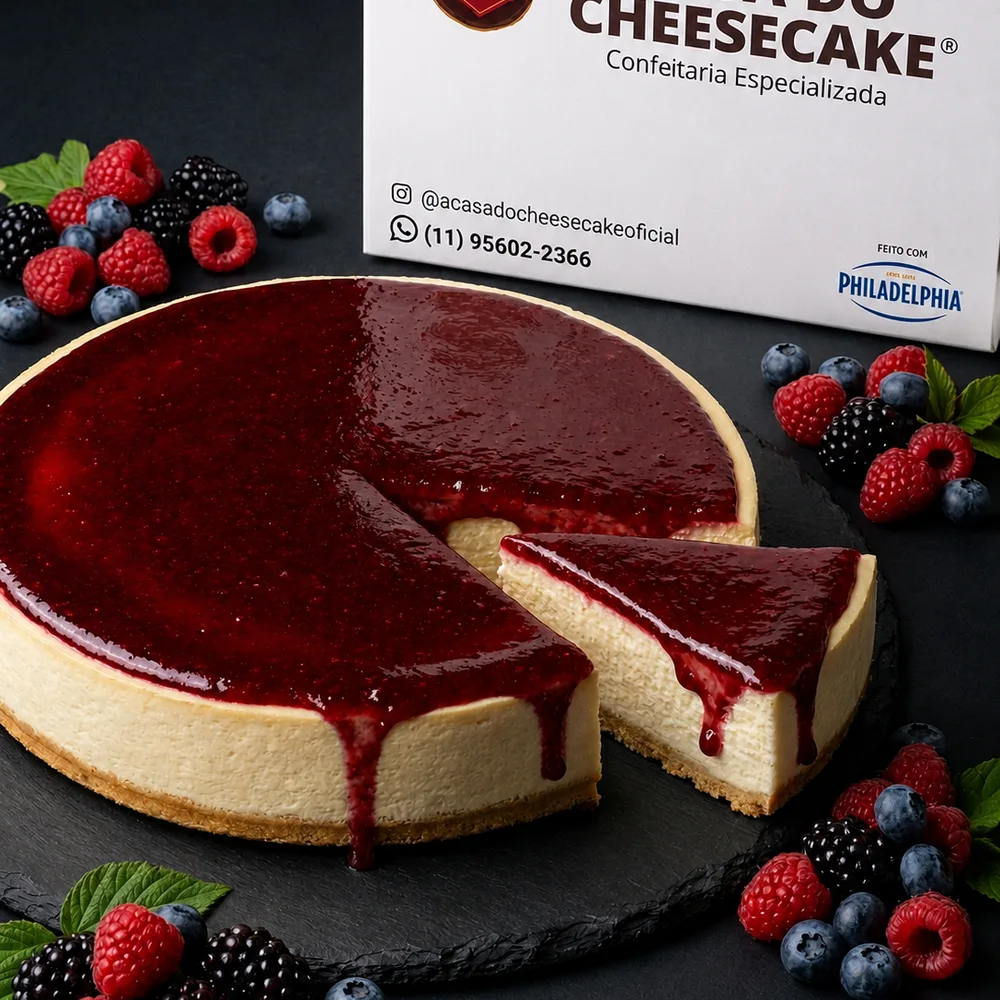
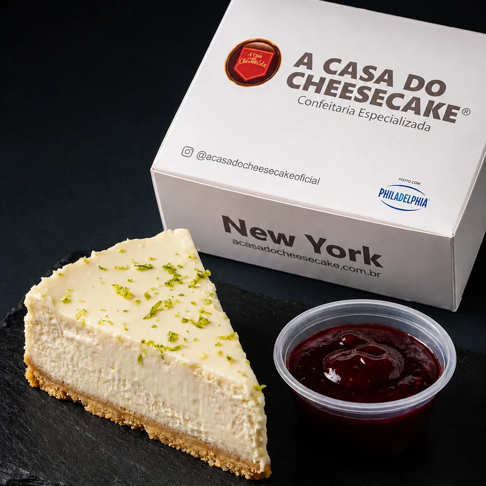
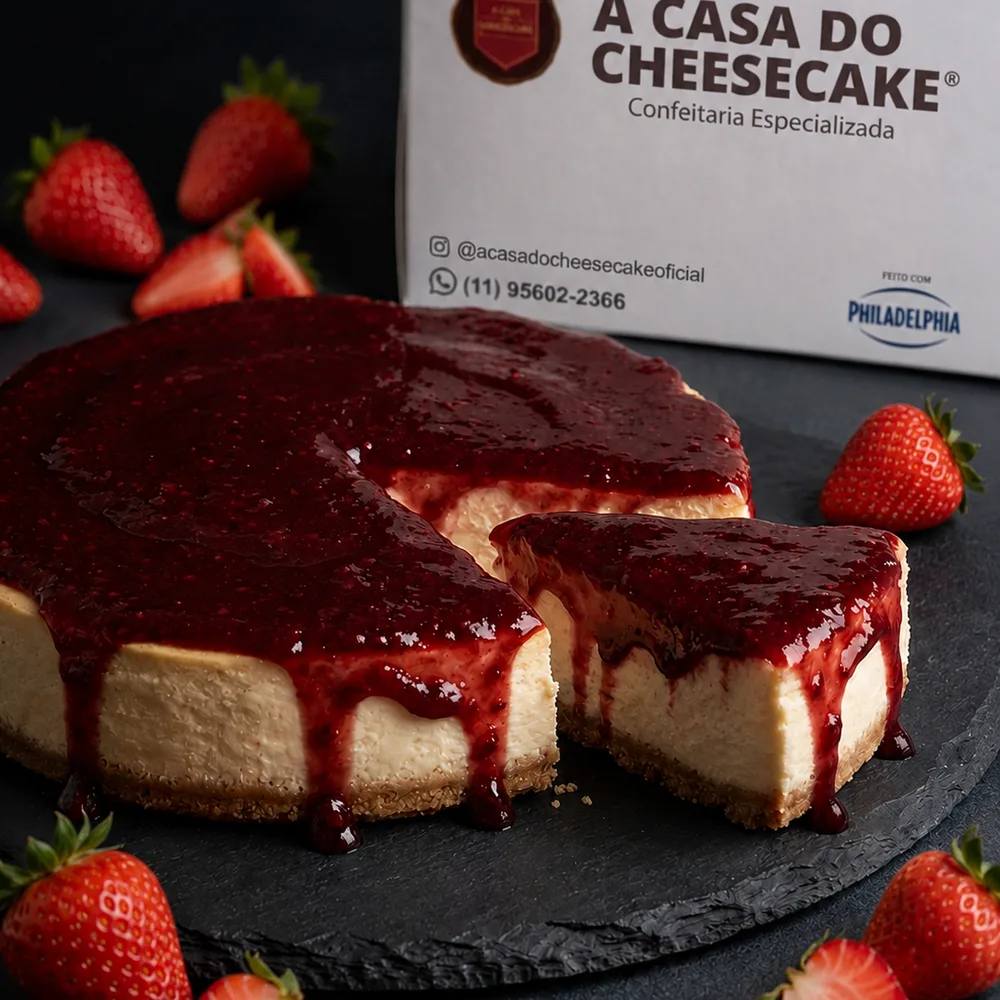

Fale conosco
Que bom que você veio conversar com a gente. Escolha sobre o que quer falar.
-
WhatsApp (11) 95602-2366
Conversar -
Pedidos delivery Cardápio online, entrega em São Paulo
Pedir -
Pedidos para restaurantes (11) 99328-0819
Conversar -
Financeiro financeiro@
Enviaracasadocheesecake.com.br -
Outros assuntos atendimento@
Enviaracasadocheesecake.com.br -
Instagram @acasadocheesecakeoficial
Seguir -
Facebook acasadocheesecakeoficial
Curtir
Perguntas frequentes
Não. Trabalhamos exclusivamente com delivery em São Paulo, pelo nosso cardápio online e pelo iFood. Toda a produção sai da nossa fábrica direto para a entrega.
A fatia de 150 g serve uma pessoa. A torta de 600 g rende até 6 mini fatias, a de 1,2 kg serve até 8 pessoas e a de 1,8 kg, de 10 a 12. Se o cheesecake for a única sobremesa da mesa, vá para o tamanho de cima — porção de cheesecake some rápido. Se houver bolo e outros doces, o tamanho de baixo resolve.
Sim. Entregamos no mesmo dia, em até 2 horas, de segunda a domingo, das 10h às 17h — inclusive feriados. Se preferir, também dá para agendar a entrega para outra data.
Na geladeira, bem fechado, o cheesecake dura até 7 dias. No congelador, inteiro ou em fatias, dura até 180 dias. Para descongelar, deixe cerca de 2 horas em temperatura ambiente antes de servir. Não use o micro-ondas, porque a textura se perde.
Aceitamos Pix, cartão de crédito e cartão de débito, todos pelo cardápio online, com confirmação automática. O pagamento acontece na hora do pedido, então a entrega chega sem nenhuma etapa a mais.
Entregamos em São Paulo, dentro da nossa área de cobertura. O cardápio confirma a disponibilidade pelo seu endereço antes de você fechar o pedido, então não tem risco de comprar e descobrir depois que não chega. Também estamos no iFood em Pinheiros, Vila Leopoldina, Bela Vista e Brooklin.
É para quem ainda não conhece a marca: você pede pelo botão “Quero minha fatia”, escolhe o sabor, a data e o horário, e recebe a fatia por nossa conta — você paga só a entrega. É 1 fatia por pessoa, com entregas de segunda a sexta, das 10h às 18h, enquanto durar o estoque do dia, dentro da nossa área de entrega em São Paulo.
Sim. É a receita original americana, assada no forno — não é uma sobremesa fria montada com gelatina ou creme batido. É isso que dá a textura densa, o sabor lácteo e a fatia que se sustenta em pé no prato. A quantidade de cream cheese Philadelphia é a da receita original, sem redução.